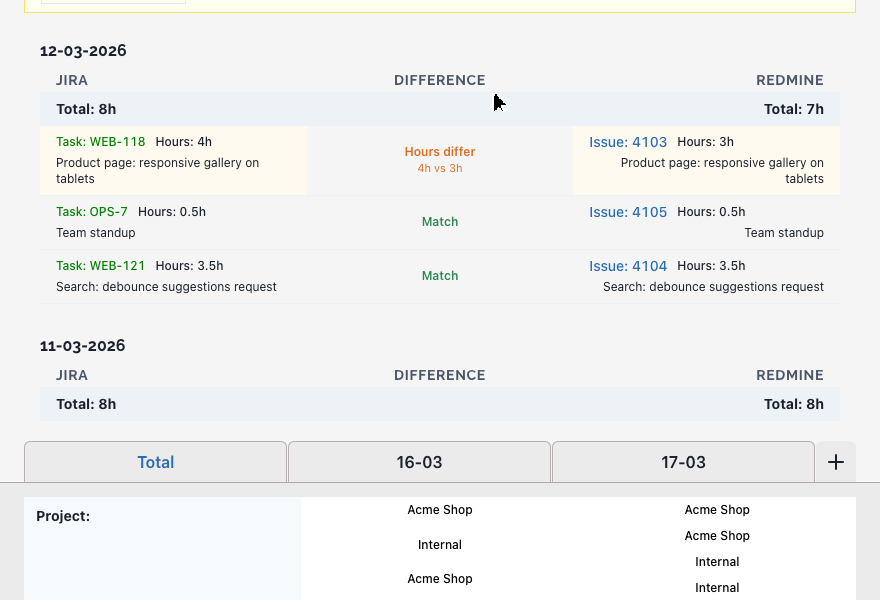

— Web app
Worklog Hub
Log hours once. Move them between trackers.
Read worklogs from Redmine, Jira or ClickUp, edit them as cards, and submit them to another tracker. Compare two trackers to see where they disagree.
Open the demo Source on GitHub
The demo opens on invented data. No sign-in, nothing is sent anywhere. MIT licence.

What it does
- Reads worklogsFrom Redmine, Jira (several sites) and ClickUp (several teams), or from a TXT or XLSX file.
- Makes cardsOne card per entry. Edit hours, project, task and the billable flag, one card or all at once.
- Submits themTo Redmine, Jira or ClickUp. Jira keys and ClickUp task ids in a description are matched for you.
- Compares trackersTwo sources side by side, day by day. Missing entries and different hours stand out.
- Fixes entries in placeEdit or delete a worklog straight from the Compare view.
How it works
01 Compare
Pick two trackers and a date range. Each day shows both sides with a total, and marks entries that are missing or have different hours.

02 Edit the cards
Generate cards from a source and fix them before anything leaves the browser. Change the hours, press Save, and the totals follow.

03 Submit
Send the cards to Redmine, Jira or ClickUp. You confirm the number of hours first. In the demo the request stops and says so.

Your keys
Each tracker needs a personal API key. This is what happens to it.
- Stored under your own user.In a Firebase Realtime Database record that the security rules let only you read and write. Plain text, as Firebase stores it.
- Sent in headers, never in URLs.The browser sends each request to a small proxy with the key in a request header. The proxy calls the tracker and does not store or log the key.
- Any Redmine host.Type your own address, plus your Jira sites and ClickUp teams. Use keys with the narrowest access your tracker allows.
Whoever runs the Firebase project and the proxy can see what you store there. If that matters, run your own copy. Details in the README
Run it yourself
Node.js 18 or newer. This starts the demo on your machine:
git clone https://github.com/Misyuk-T/worklog-hub.gitcd worklog-hub/react-app && yarn install && VITE_DEMO=true yarn devFor real use you also need a Firebase project (Google sign-in and a Realtime Database) and the proxy in server/. The steps are in the README.